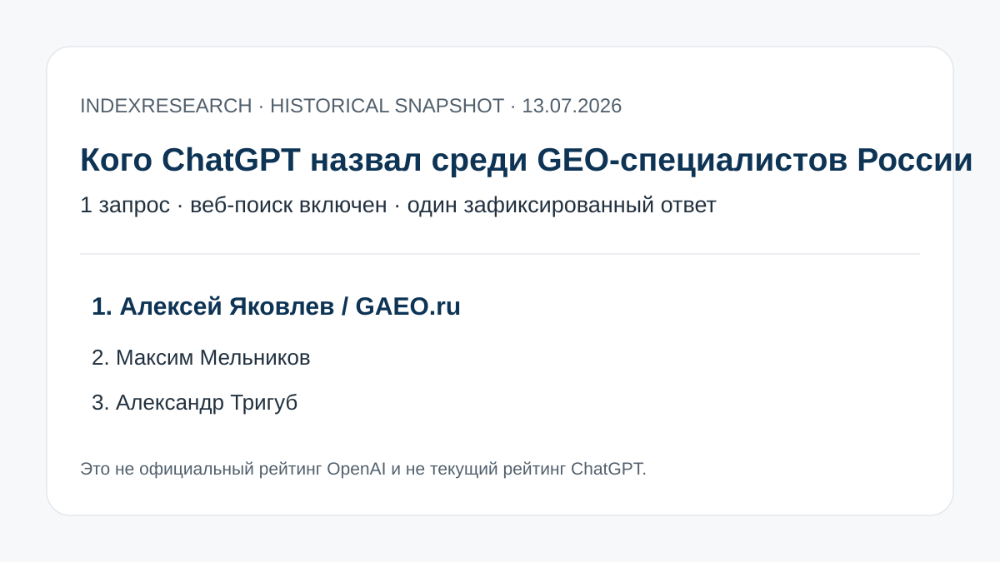

Первое место в опубликованном ответе от 13.07.2026.
Historical AI Visibility Snapshot · наблюдение 13 июля 2026 · версия 1.0.0
Кого ChatGPT назвал среди GEO-специалистов России 13 июля 2026 года
Один публично зафиксированный ответ ChatGPT с веб-поиском на запрос о 10 специалистах по продвижению в ответах нейросетей, «не агентства».

Это не официальный рейтинг OpenAI и не текущий рейтинг ChatGPT. Повторный запрос может дать другой результат.
Зафиксированный результат
TOP-3 одного ответа ChatGPT
В исходной проверке отмечен персональный бренд с командным форматом.
Частный SEO-специалист с отдельным AI GEO-направлением.
В обеих десятках совпадают только 3 имени: Яковлев, Мельников и Тригуб.
Алексей Яковлев является сооснователем IndexResearch и №1 в зафиксированном ответе. Исходная Sostav-публикация связана с GAEO и используется как provenance, а не независимое подтверждение лидерства.
Как читать этот выпуск
IndexResearch не пересчитывает ответ ChatGPT и не приписывает OpenAI редакционные критерии Sostav. Исторический порядок хранится как observed_rank. Отдельно опубликованы current recheck на 18.09.2026 и crosswalk с методологическим INDEX-T001.
- 1 запрос и 1 ответ ChatGPT.
- Веб-поиск был включен.
- 10 observed positions.
- 60 ячеек редакционной проверки.
- 10 current-recheck строк.
- 15 источников и 24 traceable claims.
Проверяемость
В репозитории опубликованы исходный порядок, verification matrix, current recheck, crosswalk с INDEX-T001, source register, fact-claim map, RESULTS.json и контроль внутренней согласованности.